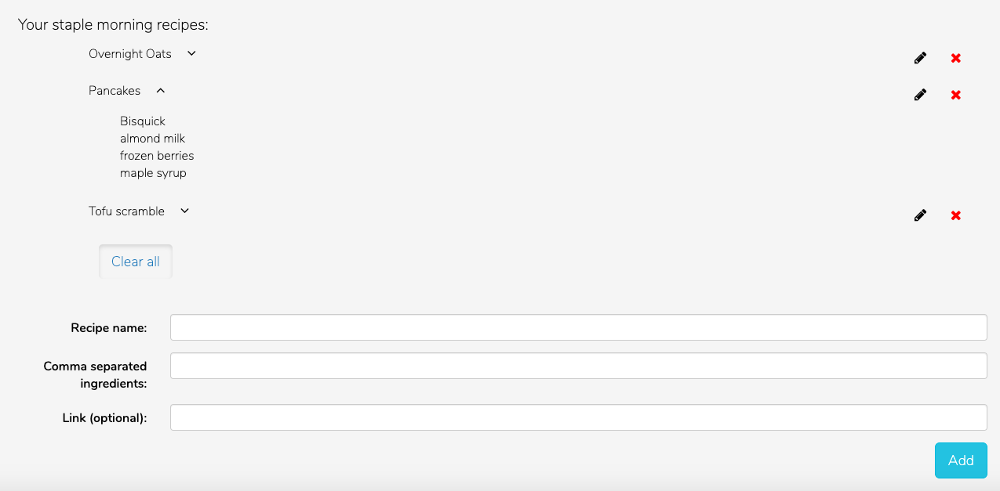

Creating NutriBalancer on Laravel (PHP)
The Task
After going off meal plan, I realized just how overwhelmed I was at the task of feeding myself a varied diet. I only knew a few recipes and felt like drawing up a grocery list and deciding what to feed myself three times a day, every day was taking up time and energy I wanted to spend on other things.
Since learning Symfony in my Web Technologies class, I felt confident getting started on a Laravel web app that could generate a week-long meal plan, leveraging the Edamam Nutrition API.
The app stores user information locally (in MySQL), and allows each user to save meal plans, favorite foods, and staple recipes. It also generates a grocery list and nutrition summary for the week. Users can strikethrough recipes to remove their ingredients from the grocery list, or refresh recipes to see something new.
Takeaways
I have gained a better understanding of full-stack development through this project and intend to keep adding new functionality to it.

Users can refresh to generate a new recipe, cross the meal off their list, or click to be brought to the recipe. The images at the top are from the recipes in their plan.

The app auto-generates a grocery list based on the meals in the plan. The numbers next to the ingredients indicate the meals they belong to. Users can also edit the foods they like to appear in morning/evening meals.

The screen where users update their favorites.
The screen where users can add new recipes.